배경
회사의 개발자 단체 방에서 추천하는 글이 있길래 한 번 찾아보았는데, 괜찮을 것 같아서 공부를 하게 되었습니다.
Mermaid란?
문법에 맞추어서 markdown을 작성하면 UML로 변환하여 보여주는 툴입니다.
vscode에서 사용
vscode에서는 Plugin(링크)을 사용해서 mermaind를 사용할 수 있습니다. 링크를 클릭하여 설치 한 후에, cmd + shift + p 를 눌러서 (window는 ctrl + shift + p로 가능합니다.) 검색창을 띄워서 아래의 내용을 검색하시면 됩니다.
> markdown:open Preview to the side
저는 간단하게 예시로 작성해 보았습니다.
:::mermaid
graph RL;
A-->B;
A-->C;
B-->D;
C-->D;
:::
이 내용을 위 의 방법으로 preview를 보게 되면,
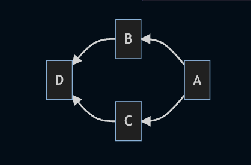
이렇게 UML을 그려주는 것을 확인할 수 있습니다.
:::mermaid
:::
안에 작성해야합니다.
사용법
먼저, mermaid에서 제공하는 다이어그램에 대해서 알아보겠습니다.
- 플로우 차트 (Flowchart)
- 시퀀스 다이어그램 (Sequence Diagram)
- 간트 차트 (Gantt Chart)
- 클래스 다이어그램 (Class Diagram)
- Git graph
- Entity Relationship Diagram
- User Journey Diagram
mermaid를 사용하기 위해서는 위의 다이어그램중에 어떤 것을 사용할 것인지를 선택 후에 어떤 방향으로 그려나갈지를 먼저 선언해야합니다. 아래의 문법에서 LR은 Left에서 Right 방향으로 그려나가겠다는 것을 선언하는 것입니다.
flowchart LR
방향은 아래와 같이 정의할 수 있습니다.
- TB(=TD): Top에서 Bottom(down)으로
- BT: Bottom에서 Top으로
- RL: Right에서 Left로
- LR: Left에서 Right로
mermaid를 다루기 위해서 알아야할 것이 두 가지가 있는데, 하나는 위의 예시로 작성하였던 다이어그램에서의 A, B, C, D와 같은 박스들을 Node라고 하고, 이를 연결하는 화살표나 선을 Edge혹은 Link라고 이름을 붙혀 사용하고 있습니다.
노드(Node)
노드는 선언하면 아래 처럼 기본적으로 네모난 형태의 이미지를 제공해줍니다.
flowchart LR
id[사람A]
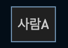
네모 말고도 UML을 그리기 위해서 여러가지 형태를 가질 수 있습니다.
flowchart LR
id([사람1])
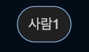
flowchart LR
id[(Database)]
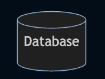
flowchart LR
id{조건1}
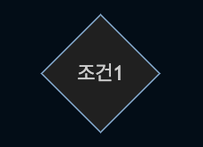
flowchart LR
id{{사람1}}
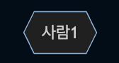
flowchart LR
id[/사람1/]
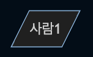
flowchart LR
id[\사람1\]
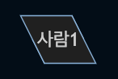
/와 \를 사용해서 모양을 자유롭게 만들 수 있습니다.
flowchart LR
id((사람1))
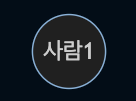
Links / Edges
flowchart LR
id((사람1)) --> id2((사람2))
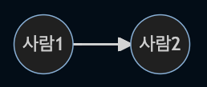
flowchart LR
id((사람1)) --- id2((사람2))
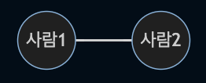
flowchart LR
id((사람1))-- 텍스트 ---id2((사람2))
또는
flowchart LR
id((사람1))---|텍스트|id2((사람2))
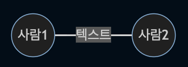
flowchart LR
id((사람1))-->|텍스트|id2((사람2))
또는
flowchart LR
id((사람1))-- 텍스트 -->id2((사람2))
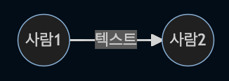
flowchart LR
id((사람1))-.->id2((사람2))
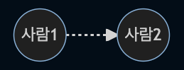
flowchart LR
id((사람1))-. 텍스트 .->id2((사람2))
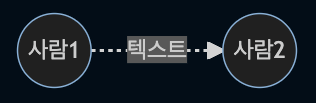
flowchart LR
id((사람1)) ==> id2((사람2))
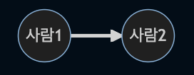
flowchart LR
id((사람1)) == 텍스트 ==> id2((사람2))
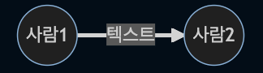
flowchart LR
id((사람1)) == 텍스트1 ==> id2((사람2))
id((사람1)) == 텍스트2 ==> id2((사람2))
id((사람1)) == 텍스트3 ==> id3((사람3))
id((사람1)) == 텍스트4 ==> id4((사람4))
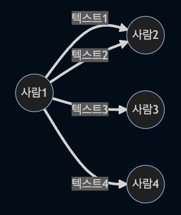
flowchart LR
id((사람1)) x-- 텍스트1 --x id2((사람2))
id((사람1)) o-- 텍스트2 --o id2((사람2))
id((사람1)) <-- 텍스트3 --> id3((사람3))
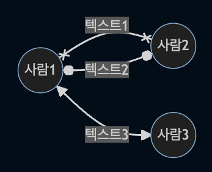
결론
mermaid의 기본적인 사용법을 알아보았습니다. 위에서는 flowchart로 설정하여 예시를 만들어보았는데, 다른 다이어그램을 사용할 때에 추가적으로 숙지해야할 것들이 있습니다. 공식문서를 참고하셔서 활용하시면 좋을 것 같습니다. (공식문서) 📊 Diagram Syntax 부분을 참고하시면 문법에 대해서는 익숙해질 것 같습니다. 그리고 참고로 그냥 보는용이 아니라, npm을 통해서 다운로드 받아서 서비스에서도 사용이 가능합니다.
- Gatsby에서도 plugin이 있어서 공유하겠습니다. (gatsby plugin)
- Notion에서도 /code 를 통해서 사용할 수 있습니다. (Notion으로 다이어그램을 그린다고?)